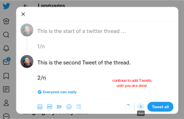

Module 2: Digitalisation in Research
Communicating your research
Jana Lasser
TU Graz & CSH Vienna
2022-12-16
Why should you communicate your research?
Creating impact
Getting feedback
Promoting yourself to further your career
To whom should you communicate your research?
Creating impact → media, public stakeholders
Getting feedback → researchers, public stakeholders
Promoting yourself to further your career → researchers
Twitter (and Mastodon) allow you to reach all these audiences on one platform.
The anatomy of a Twitter profile
The anatomy of a Twitter profile
The anatomy of a Twitter profile
The anatomy of a Twitter profile
The anatomy of a Twitter profile
A random selection of great researcher's profiles
A random selection of great researcher's profiles
A random selection of great researcher's profiles
Other platforms: Google Scholar
Other platforms: ORCID
Other platforms: ResearchGate
Other platforms: LinkedIn
Summary: other platforms
Google scholar: planning to stay in academia? This is a must-have. Set it up such that you have to approve of new article entries.
ORCID: Gives you a persistent ID. You should have at least an account and associate it with all your publications.
ResearchGate: Gives you a lot of control over how you present your projects. If you don't have a personal website, consider using this.
LinkedIn: Planning to switch to industry or doing speaking engagements there? Then you should consider setting up an account.
Exercise [10 min]
If you don't have one already: make an account on Twitter. Fill your Twitter account with your personal information. If you really don't want to use Twitter: use the time to either set up or update one of your Google Scholar / ORCID / ResearchGate or LinkedIn profile.
Science communication on Twitter
– a thread
Image source: https://t.co/tKE3KNkpDX?amp=1
But what about actual content?
Content depends on the audience you are adressing.
Researchers: Relate to other work, mention the contribution to the field, raise potential further research questions.
Media: Why is this relevant right now? Does it solve any problems? Is there a relatable story you could tell?
General public: How does your research relate to everyday life? Is there an action you want to elicit? Do you seek feedback or input?
How to create a Twitter thread
How to create a Twitter thread
How to create a Twitter thread
How to create a Twitter thread
Services around Twitter threads
Scheduling threads: www.oneupapp.io
Creating mockup tweets: www.tweetgen.com
Exercise [30 min]
Do one of the following
Pick a paper or preprint you wrote, think about an audience you want to address and write an engaging Twitter thread about it.
Pick a paper you recently enjoyed reading and review it in a Twitter thread addressing a researcher audience.